Gran Malecón
El Gran Malecón es un espacio público abierto multipropósito de
Barranquilla, adyacente a la margen occidental del río Magdalena.
1Su área es de 0,16 km² (15,8 ha) y se extiende linealmente 5 km
desde el centro de eventos Puerta de Oro hasta la isla de la Loma.
Su primera etapa fue el paseo peatonal a la altura del centro de
eventos, inaugurada en julio de 2017.
Galeria de Imágenes
 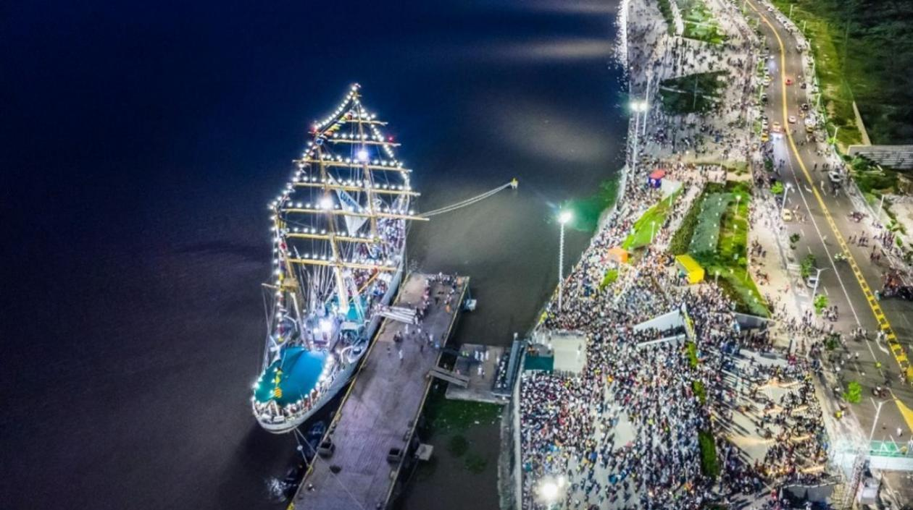
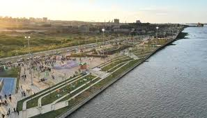
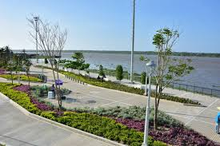
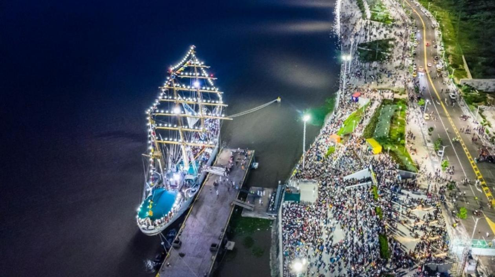
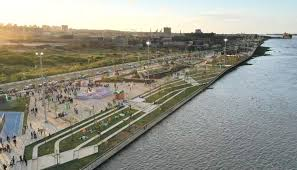
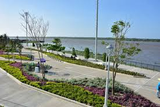
Castillo de Salgar
El castillo de San Antonio de Salgar es una edificación ubicada
en el corregimiento de Salgar, municipio de Puerto Colombia, en
el noroccidente del departamento del Atlántico, Colombia. Se
encuentra a 15 minutos de Barranquilla. Fue construido en 1848
sobre las ruinas del antiguo fortín de San Antonio.
Galeria de Imágenes
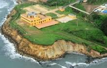
 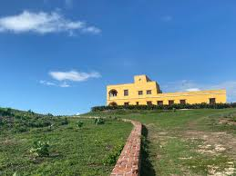
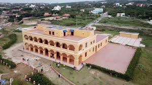
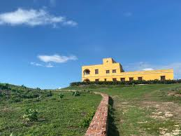
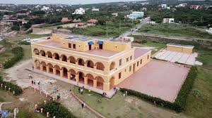
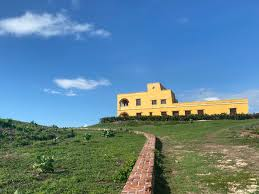
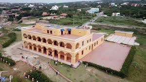
Monumento Ventana Al Mundo
La Ventana al mundo es un monumento público ubicado en Barranquilla,
Colombia. Fue construido a finales de 2018 para coincidir con los
XXIII Juegos Centroamericanos y del Caribe de los cuales la ciudad
fue anfitriona. Está emplazado en una glorieta del corredor
industrial de la Circunvalar, cercana a su intersección con la Vía 40.
Galeria de Imágenes
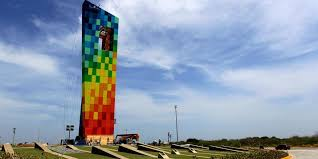
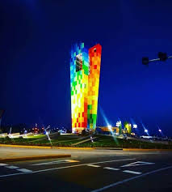
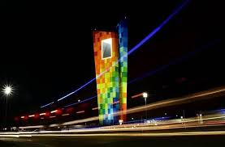
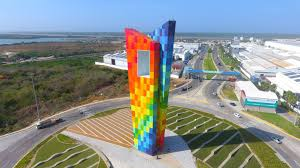
Parque Isla Salamanca
La isla de Salamanca es un extraordinario conjunto de playones,
ciénagas y bosques que ocupa el antiguo estuario del río
Magdalena. La atraviesa longitudinalmente la carretera que
comunica a las ciudades de Barranquilla y Santa Marta, por lo
que sus paisajes lacustres y de manglar pueden apreciarse
perfectamente en el trayecto. Es por esta razón que se le ha
dado la categoría de “Vía Parque”, única en el Sistema de
Parques Nacionales Naturales de Colombia.
Galeria de Imágenes
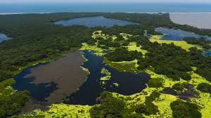
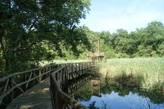
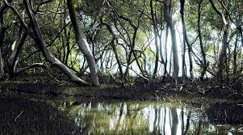
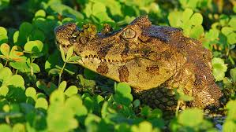
Gastronomia
La capital del departamento es la ciudad de Barranquilla, y su
plato típico por excelencia es el arroz de lisa, que se sirve
dentro de un bollo de yuca y consiste en guisar un pez de la
zona llamado lisa. También es muy tradicional el sancocho de
guandú, una sopa hecha con carne, tubérculos, verduras y
especias. Además se toman muchas arepas, en especial la de huevo.
Los pescados más tradicionales son el bocachico y la mojarra, y
también son muy apreciados los mariscos del Caribe, en especial
las langostas, que son muy abundantes en la zona costera. Los
arroces son también un referente en la cocina Atlántica, el de
mariscos, el de coco, de fríjol cabecita negra, de fideos, de
chipichipi y el cucayo son los más presentes en la gastronomía
de la zona.Es un departamento con una importante tradición
repostera, como muestra los dulces que se preparan con motivo de
la Semana Santa o los presentes todo el año como la alegría, el
enyucado, la arropilla o las cocadas.